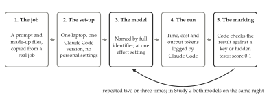
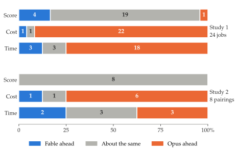
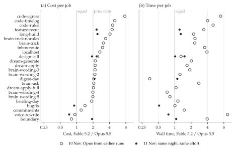
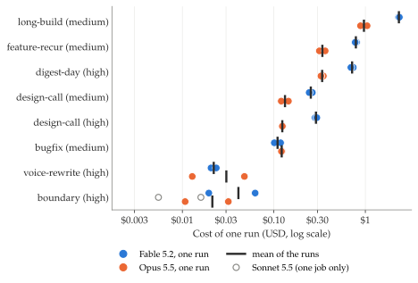
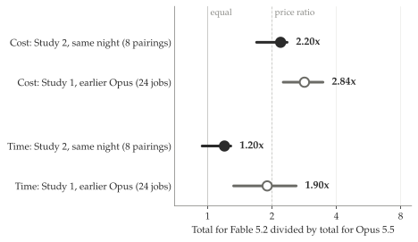

Small businesses choosing an AI model are told which one is strongest on general benchmarks. They are rarely told whether the most expensive model is worth its price on the work they actually do. I compared Claude Fable 5.2, Anthropic's most capable widely released model, with Claude Opus 5.5, which costs half as much per token, on the work of my own one-person AI consultancy between 10 and 16 November 2026. No client documents or client personal data were used: the code-marked jobs run on made-up data, and the open-ended work on the business's own notes and code. The comparison had three parts: 24 jobs from the business marked by code and set against earlier Opus runs; eight pairings of job and effort run on the same night with both models at matched effort; and six pieces of open-ended work (a plan, an audit, a research question, a fault diagnosis, a second opinion and writing in my voice), judged by checking claims against their sources, by re-running findings, or by a blind judge. On the code-marked jobs the models were level. Both scored 1.00 on every same-night pairing, where Fable cost 2.20 times as much and took 1.20 times as long; earlier figures that made Fable look two to three times slower came from a busy machine and mismatched settings. On open-ended work Fable earned its price where one wrong fact would change the decision. In the research task, Fable alone held every checked claim for about 1.6 times the cost of Opus alone, whose recommendation rested on a feature new users cannot get. Fable lost a blind test of writing in my voice, and both models made factual mistakes that no score would have caught. I give a simple rule for which jobs to send to which model, and release the per-run data and the scripts that build every table.
Keywords: large language models; model selection; cost; evaluation; small business; Claude
Small businesses that ask me about AI tend to ask some version of the same question: which one should we pay for? Behind it sits a narrower question that matters more to the bill. Vendors now sell several models at very different prices, and the newest, most capable one usually costs the most. Anthropic prices Claude Fable 5.2 at USD 8 per million input tokens and USD 40 per million output tokens, twice Claude Opus 5.5 at USD 4 and USD 20 [1], although reading back from the prompt cache costs the same USD 0.20 per million on both. A business that sends everything to the top model pays about double. One that never uses it may miss the jobs where it would have prevented an expensive mistake.
Public benchmarks answer a different question. They measure what a model can do on a fixed, shared set of tasks [2, 3], and the strongest models now sit so close to the ceiling on many of them that the differences are hard to read [4]. Kapoor and colleagues argued that cost should be reported next to accuracy whenever agents are compared [5], and routing systems such as FrugalGPT and RouteLLM rest on the observation that a cheaper model often does a given job as well as a dearer one [6, 7]. Okubena, Mohammed and Elbadawi made a related point in a very different field: standard language metrics told them how fluent a model's output was but not whether the pharmaceutical formulation it proposed would print, so they built a measure for the job itself [8]. The same applies to a business. What it needs to know is how the models do on its own work, marked in a way that reflects what a mistake would cost.
This paper reports what happened when I ran Fable 5.2 and Opus 5.5 on the everyday work of my own business, Native Reason, a one-person AI consultancy in London. Most of the work is unglamorous: filing email, pulling promises out of a thread, writing small programs, fixing bugs, checking which files may leave the laptop, researching decisions and planning the week. I had already built a bench of these jobs to decide which model each part of the business should use: each one copies a real job, runs on made-up emails, notes and code, and is marked by code. When Fable 5.2 came out I added it to the bench, and over the following week I also gave both models the same open-ended briefs and checked what came back.
Three findings follow. First, on jobs a computer can mark the two models were level, and Fable's extra cost was almost exactly its higher price: it used only a quarter more output tokens and, once timed fairly, it was not much slower. Second, on open-ended work where one wrong fact would change the decision, Fable was as good or better, and in one research task clearly more accurate for about 1.6 times the cost. Third, both models made factual mistakes of a kind no score would catch, so the habit of checking claims matters at least as much as the choice of model. Following OpenAI's release of its mathematics manuscripts together with their compute and verification records [9], I publish the per-run numbers and the scripts that turn them into every table and figure here.
What I expected. I did not write a prediction down before the runs. Asked afterwards what I had expected, I said there would be pros and cons to both: that Fable would be the better model, but that some jobs could be done just as well by Opus, and that the best way to use them would be to send each job to the right model. That is a recollection, not a registered hypothesis. Section 4.1 says how it held up.
All runs were made on one Windows laptop through Claude Code, Anthropic's command-line agent [10]. The Fable runs and the same-night runs used version 2.1.322 between 10 and 16 November 2026. The earlier Opus and Sonnet runs that Study 1 uses as a baseline were made on 5, 6, 15 and 21 October with versions 2.1.284 and 2.1.291 (Appendix C), so the version of Claude Code is one more thing that differs in Study 1. The other exception is the labelling job in Section 3.1, run again on 19 November with the same settings on Claude Code 2.1.328 after one of its invented requests was reworded. The business keeps its notes, rules and code in a single folder under version control, which the agents read and write. Every job reported here used the business's own material or made-up test data. Work done on client material is not included.
In all, the bench part of the paper rests on 237 runs (data/runs.csv): 93 by Fable 5.2, 77 by Opus 5.5, 65 by Sonnet 5.5 and 2 by Haiku 5.5, of which 177 belong to Study 1 and 60 to Study 2. The five broken or blocked runs described in Section 2.3 are in the file with the reason but are not counted. Held fixed throughout: the laptop, how Claude Code was called (headless, with no personal settings, hooks or memory), the fence round agent jobs, the full model identifier and the marking code. Within each study what changed between runs was the model and its effort setting. Figure 1 shows how one run works, and Appendix C lists the exact versions used.

The runs were paid for through a Claude Max subscription. For every call, Claude Code reports a cost worked out from the tokens used and Anthropic's API prices; on a subscription this is the share of the allowance used, not money spent. I report that figure throughout as cost, because it is what a business paying by the token would pay.
The two models were claude-fable-5-2 and claude-opus-5-5, named by their full identifiers. This turned out to matter. On an older Claude Code version the short name "fable" still pointed to Fable 5.1, and two of the first nineteen Fable jobs I logged quietly ran the older model. Neither is used here, and for every other run I checked the model recorded in the run's own transcript. Both models think before they answer. The effort setting, from low to max, controls how much: higher effort means more thinking and more tool use before the answer, which costs more tokens and takes longer. Opus 5.5 defaults to medium [1]. Unless stated otherwise Fable ran at high effort. Table 1 gives the prices, with Sonnet 5.5 for reference because the business already uses it for routine jobs.
| Model | Identifier | Input | Output | Cache read |
|---|---|---|---|---|
| Claude Fable 5.2 | claude-fable-5-2 | 8.00 | 40.00 | 0.20 |
| Claude Opus 5.5 | claude-opus-5-5 | 4.00 | 20.00 | 0.20 |
| Claude Sonnet 5.5 | claude-sonnet-5-5 | 2.00 | 10.00 | 0.10 |
The bench holds 25 jobs taken from the business (Appendix A). Each is a single prompt or a small agent task in its own folder, and each is marked by code: an answer key, hidden tests, or a script that checks what the agent left behind. No model marks another model's work on the bench. Agent jobs run inside a fence: file tools are confined to the job's folder and only a short list of shell commands is allowed. Every call runs headless with no personal settings, hooks or memory loaded, so the models are compared on the job and not on my set-up. Each hidden test was checked against a correct reference solution before the first run, so a failure is the model's and not the test's. I wrote the jobs and their answer keys myself and kept them private. They were never published before these runs, so the models cannot have seen them in training. The two jobs shown in Appendix D are published with this paper, after the runs.
Fable 5.2 ran each job two or three times at high effort on 10 November. One job, labelling requests by difficulty and data sensitivity, was left out of this comparison and is reported in Section 3.1. For comparison I used the most recent Opus 5.5 and Sonnet 5.5 runs the bench already held for each job, made between 5 and 21 October, plus Opus runs made on 10 November for four wording jobs that had none. These baselines were not run alongside Fable. They ran on other days and, for ten of the 24 jobs, Opus had run at medium rather than high effort. Study 2 removes both problems, but only for the eight pairings it happened to cover (Section 2.4).
The first Fable run stopped after 68 of its 77 runs when the laptop's disk filled, and the nine lost runs were made again the same day. The briefing job among them first ran from a folder where Claude Code refuses to write files, so all three of those runs scored 0 for a missing file; that was my set-up, not the model, and the job was run again from an ordinary folder. Two more Fable runs were broken by the machine: the disk filled during one (digest-day, scored 0.40), and another program was holding the network port the job needed during the other (localhost, 0.29). Both jobs were run once more. The broken and blocked rows are published in data/runs.csv with the reason, and left out of every average. Counting the two broken runs would give Fable 0.80 on digest-day and 0.76 on localhost instead of 1.00.
Early on 11 November an automatic job that tests every new model on the bench ran Fable 5.2 next to the settings the business was using at the time. For eight pairs of job and effort, Opus 5.5 and Fable 5.2 ran the same job at the same effort, twice each, on the same machine, with all 32 of these runs starting within about eight minutes of each other and up to four running at a time. The eight pairings cover seven jobs, because one job ran at two efforts. Four pairs were at high effort and four at medium (Table 3). The same run also put Fable against Sonnet 5.5 and Haiku 5.5 on other jobs; I mention those only where they bear on the comparison.
Bench jobs have right answers. Much of the work that matters to a small business does not: a plan, an audit, a research answer, a judgement on someone else's draft. Between 10 and 16 November I gave six such jobs to Fable 5.2 (Table 2). In four of them Opus 5.5 was given the same brief, and neither model saw the other's work. In the fifth Fable reviewed a draft Opus had written, and in the sixth Fable worked alone and Opus re-checked its findings. How each job was judged depended on the job. Claims were checked against the pages they cited, both by script and by reading; findings were re-run against the live system; and two LinkedIn posts in my voice were marked blind by a separate model on a ten-point scale [11]. The research trial had a marking sheet that was written and committed to version control before any run started.
| ID | Date | Job | Arms | How it was judged |
|---|---|---|---|---|
| P | 10 Nov | Plan an afternoon of background work for the business's AI agents | Fable; Opus | Both plans compared side by side; I chose which to use |
| W | 10 Nov | Two LinkedIn posts in my voice, same two topics | Fable; Opus | Blind judge (Opus 5.5), voice and clarity out of 10 |
| A | 10 Nov | Audit the business's own systems: scheduled jobs, rules, memory, logs | Fable only | Each of the ten top findings re-run by Opus 5.5 |
| S | 11 Nov | Second opinion on a website search title and description drafted by Opus | Fable reviewing Opus | Every claim checked against the site's files |
| R | 16 Nov | Research: how to package a product so the customer keeps their data | Fable; Opus; Fable leading 7 Opus | Marking sheet set in advance; 21 to 24 claims per report checked against sources |
| D | 16 Nov | Find why the business's AI chats stop and hand work back, and how to fix it | Fable; Opus | Reports compared; five key claims checked in the files |
For bench jobs I recorded the score from 0 to 1, wall time, cost and output tokens, and averaged them over the runs of each job. For the open-ended work I recorded whether claims held against their sources, whether findings held when re-run, what I chose to use, and time and cost where the transcript allowed. To keep words like "same" honest I used fixed rules set before Study 1: scores within 0.02 of each other count as the same, and time or cost must differ by at least 15% to count as different.
The job. The model gets an email thread between a consultant and a made-up client and must list every promise anyone made: who owes it (we_owe or owed_to_us), who will do it, what, and the due phrase copied word for word from the email, or null if no timing was given. A request does not count unless the other side agreed to it. It replies with a JSON list and nothing else.
One line of the thread. "I'll have the revised quote with you by Monday 12 October."
The answer key has seven entries. The entry for that line is:
{"direction": "we_owe", "what_any": ["quote"], "due": "by Monday 12 October"}
What Fable 5.2 answered for it.
{"direction": "we_owe", "who": "Joe", "what": "Send the revised quote", "due": "by Monday 12 October"}
The score. Each key entry earns one point if the reply has an item with the right direction and a matching key word in "what", and one more point if its due phrase matches the email's words (or is null when the key says there was no timing). The score is the points divided by 14, minus 0.1 for every extra item that matches no entry. Fable's reply matched all seven entries with all seven due phrases right and listed nothing extra: 14 of 14, a score of 1.00. A reply that missed the signed NDA and added one invented promise would have scored 12 of 14 minus 0.1, which is 0.76. Standard language measures would not catch this kind of mistake, which is why the job has its own marking code.
Neither study separated the two models on score. In Study 1 Fable scored 1.00 on 23 of the 24 jobs and 0.98 on the other, where one of three runs missed a hidden test. The mean across jobs was 0.999 for Fable, 0.976 for Opus 5.5 and 0.993 for Sonnet 5.5 (Appendix B). Most of the Opus shortfall came from a single job: in its two October runs at medium effort on the recurring-tasks feature, one failed every hidden test (0.00) and the other passed them all (1.00). In Study 2, at the same medium effort on the same night, Opus passed all of them. Across the eight same-night pairs both models scored 1.00 on every run (Table 3). Where a job was repeated, the lowest and highest single runs are in data/by_task.csv, and Table 3 shows them for time and cost. I report ranges rather than significance tests, because two or three runs of a job are too few for a test to mean anything.
The one job on which Fable did worse was outside the Opus comparison. Asked to label a list of requests by difficulty and by how sensitive their data was, Fable at low and medium effort scored 0.93 and 0.95 against 0.98 and 1.00 for Sonnet 5.5, because in three of its four runs it marked the same three internal requests as client work. It made the same mistake in every run when the job was first tried on 11 November. That is a cautious mistake rather than a careless one, but it is still wrong against the key.
Figure 2 counts the jobs using the rules from Section 2.6. On score, 19 of the 24 jobs in Study 1 and all eight pairings in Study 2 came out the same. Fable was ahead on four jobs in Study 1 and Opus on one. Cost and time (Section 3.2) are a different picture: Opus was cheaper by at least 15% on 22 of 24 jobs in Study 1 and on six of eight pairings in Study 2.

| Job | Effort | Score (both) | Time Fable | Time Opus | Ratio | Cost Fable | Cost Opus | Ratio |
|---|---|---|---|---|---|---|---|---|
| boundary | high | 1.00 | 5.0 4.9 to 5.0 | 4.7 4.6 to 4.8 | 1.06 | 0.041 0.019 to 0.062 | 0.021 0.011 to 0.032 | 1.93 |
| design-call | high | 1.00 | 35.5 33.7 to 37.4 | 23.5 23.3 to 23.6 | 1.51 | 0.289 0.282 to 0.295 | 0.124 0.123 to 0.124 | 2.33 |
| digest-day | high | 1.00 | 68.2 67.5 to 68.9 | 61.1 60.5 to 61.8 | 1.12 | 0.716 0.695 to 0.738 | 0.337 0.327 to 0.347 | 2.12 |
| voice-rewrite | high | 1.00 | 5.2 5.2 to 5.3 | 6.8 6.1 to 7.5 | 0.77 | 0.022 0.021 to 0.024 | 0.030 0.013 to 0.048 | 0.73 |
| bugfix | medium | 1.00 | 13.2 12.9 to 13.5 | 25.6 25.4 to 25.9 | 0.52 | 0.110 0.101 to 0.118 | 0.122 0.121 to 0.122 | 0.90 |
| design-call | medium | 1.00 | 22.6 21.2 to 24.0 | 22.2 21.8 to 22.7 | 1.02 | 0.253 0.243 to 0.264 | 0.132 0.120 to 0.144 | 1.92 |
| feature-recur | medium | 1.00 | 95.8 93.2 to 98.4 | 78.2 70.0 to 86.3 | 1.23 | 0.788 0.775 to 0.800 | 0.339 0.314 to 0.364 | 2.32 |
| long-build | medium | 1.00 | 283.0 279.1 to 286.8 | 218.8 202.1 to 235.4 | 1.29 | 2.326 2.301 to 2.352 | 0.965 0.885 to 1.045 | 2.41 |
| Total | 528 | 441 | 1.20 | 4.55 | 2.07 | 2.20 |
Fable cost more on almost every job. In Study 1 it cost 2.84 times as much as Opus in total (USD 16.37 against 5.77 across the 24 jobs) and 5.35 times as much as Sonnet 5.5 (USD 3.06). Per job the ratio to Opus ran from 0.80 to 7.70 (Figure 3a). The highest ratios were all on jobs where the Opus baseline had run at medium effort: the median ratio there was 3.54, against 2.11 where both had run at high.
Study 2 removes that problem. At matched effort on the same night Fable cost 2.20 times as much in total (USD 4.55 against 2.07), with a median of 2.02 per job and a range of 0.73 to 2.41. Fable produced 1.24 times as many output tokens as Opus in total, but one long build dominates that sum: the median per pairing was 1.07, and Fable wrote fewer output tokens on three of the eight. Because cache reads cost the same on both models, a cost ratio above 2 means Fable also used more tokens overall, not just more output. The bench did not record input and cache tokens for these runs, so the cost cannot be split further. By the 15% rule Fable was cheaper on one short job, a rewrite (ratio 0.73); on a bug fix both Fable runs cost less than both Opus runs, but by less than 15% on average (0.90).
Time gave a different answer in the two studies (Figure 3b). In Study 1 Fable took 1.90 times as long as Opus in total, and on one short rewrite job more than nine times as long. That run shared the laptop with other work in the middle of the day, four jobs at a time. The baselines also ran four at a time and some of them stalled too, so I cannot say how much of the gap the machine caused; the lower effort of ten baselines explains at least part of it. In Study 2, with both models under the same conditions, Fable took 1.20 times as long in total and the median ratio was 1.09. My own notes after the first run said Fable was two to three times slower. With fair timing that was wrong.

Figure 4 shows every run in Study 2, so you can see the spread behind each average. On five of the eight pairings both Fable runs cost more than both Opus runs, by roughly a factor of two. On the bug fix both Fable runs were cheaper, though by less than the 15% that counts as different. On the other two, a short rewrite and the smallest job, the dots overlap: the rule counts the rewrite as cheaper on Fable from its average, but a single run of each would not have shown it. I chose cost and not score because every Study 2 run scored 1.00, so a score plot would be a single column of dots. Each job has only two runs, so I show the dots and not error bars.

Figure 5 gives the total cost and time ratios from Section 3.2 a range. I resampled the jobs 10,000 times and recomputed each ratio of totals; the bars show the middle 95% of those results. Study 2 has only eight pairings of seven jobs, so its ranges are wide. Its cost ratio of 2.20 runs from 1.69 to 2.36, and its time ratio of 1.20 runs from 0.94 to 1.28, which includes 1, so I cannot rule out that Fable was no slower at all. Study 1's cost ratio of 2.84 runs from 2.26 to 3.47 and its time ratio of 1.90 from 1.32 to 2.60.

Planning (P). Fable wrote its plan in about three minutes and Opus in about 25. The times are not like for like, because Opus sent three helpers to search the files first and Fable did not. I used Fable's plan as the base and took three things from Opus's. Fable's plan was better on risk and on how much it asked of people: it capped the number of questions it would put to me and to my assistant, and it treated instructions found inside incoming messages as information rather than orders. Opus noticed that a tool for part of the job already existed, which Fable would have rebuilt. Fable also wrote two times into its plan, such as "checked 12:25", that it could not have known, since it had finished at 12:20.
Writing in my voice (W). Opus won both blind pairs. The judge gave Opus's two posts 8 and 8 for sounding like me and 8 and 8 for clarity; Fable's scored 7 and 6 for voice and 6 and 6 for clarity. Fable's weaker post closed on a stock moral of the "it's not X, it's Y" kind, stacked up lists, and used words my readers would not know. It also gave the wrong date for when some notes had started waiting. The judge was itself Opus 5.5, so it may have favoured writing like its own [12]. My assistant read the Opus posts afterwards but did not see Fable's, so there is no human comparison.
Audit (A). Fable audited the business's own systems, and Opus re-ran each of its ten top findings. Nine held as stated, with counts that matched to within one. The tenth found a real failure, a weekly report that had stopped appearing, but gave the wrong cause: Fable read a log line saying the usage allowance had run out and took it at face value, when in fact a news page that mentioned usage limits had tripped a check. The Opus re-check took the same log line at face value at first. Fable said plainly what it had not checked, but it skipped the wider searching the brief had invited. Two of the problems were already being fixed by other work while the audit ran, and the rest were fixed that afternoon.
Second opinion (S). Opus had drafted a new search title and description for the business's website, and Fable reviewed the draft. Every point it made held when checked against the site's files. The draft reversed a decision I had made three weeks earlier, implied that my customers were all in West London when the site only says that I am, and was long enough to be cut off in search results. I used Fable's wording. The review took about two minutes.
Research (R). Table 4 sets out the three arms. All three found most of what a thorough answer needed: each covered 11 of the 12 points on a checklist written before the runs, so, as on the bench, the checklist did not separate them. Accuracy on the facts that changed the answer did. Fable alone held all 21 of the claims checked and tied every claim in its report to a source, for about USD 6 and 13 minutes. Opus alone was the cheapest at about USD 4 and 16 minutes, and found one useful thing no other arm found, but its main recommendation relied on a feature that is closed to new users, and it gave one date that its source does not give. Fable leading seven Opus researchers produced the most accurate report. All 24 checked claims held word for word, the lead caught and corrected four mistakes made by its own researchers, and it alone settled the two facts that decided the answer. It cost about 11 times as much as Opus alone, took 35 minutes, and was too long to read quickly. The three arms shared one web-search allowance, and Opus alone and the team's researchers all ran into it part-way, which may have held them back.
| Fable alone | Fable leading 7 Opus | Opus alone | |
|---|---|---|---|
| Wall time (minutes) | 13.1 | 34.9 | 16.4 |
| Cost (USD) | 5.61 to 7.05 | 40.91 to 48.76 | 3.66 to 4.34 |
| Output tokens | 64,625 | 549,766 | 62,005 |
| Web searches / pages read | 51 / 75 | 177 / 648 | 32 / 58 |
| Report length (words) | 6,234 | 9,670 | 5,219 |
| Claims checked / held | 21 / 21 | 24 / 24 | 24 / 22 |
| Claims tied to a source in the text | all | all | none |
| Dead links found by code | 1 | 0 | 0 |
| Marking sheet score (of 22) | 21 | 21 | 18 |
Diagnosis (D). Both models were asked why my AI chats kept stopping to hand work back to me, and how to stop it for good. Their reports agreed on the causes and on the first fix. Fable took 4.3 minutes and about 154,000 tokens; Opus took 8.6 minutes and about 191,000. Each found things the other missed. Both repeated the same wrong figure from a usage report that marks itself as not ready.
Table 5 lists every factual mistake found in the open-ended work, by model. None of them would have lowered a bench score.
| Job | Fable 5.2 | Opus 5.5 |
|---|---|---|
| P | Wrote two times it could not have known; missed an existing tool | |
| W | Wrong date for when some notes started waiting | |
| A | Right failure, wrong cause, from a misleading log line | Re-check accepted the same log line at first |
| R | Out of date on what one connector can do; one dead link; under-counted its own searches | Recommended a feature closed to new users; one date not on its cited page; researchers in the team arm made four errors that the Fable lead corrected |
| D | Repeated a wrong figure from a report | Repeated the same wrong figure |
On jobs with a right answer a computer can check, Fable 5.2 and Opus 5.5 both got the answer right, and so did Sonnet 5.5 at about a fifth of Fable's cost. That is useful for a business, because these are the jobs it runs most often, but it is not evidence that the models are equally able. A score of 1.00 is a ceiling: it says the job was too easy to separate them, not that they would tie on a harder one [4]. The same thing happened with the research trial's checklist. What separated the arms was accuracy on the few facts the decision hung on, which is the kind of measure Okubena and colleagues argue a field has to build for itself [8].
Against what I expected. [JOE: once you have filled in "What I expected" in Section 1, say here which of your expectations failed and which held. Plain sentences, one per expectation. Facts you can lean on from this paper: the two models scored the same on the bench; Fable cost 2.20 times as much at matched effort against a price ratio of 2; the first timing said two to three times slower and fair timing said 1.20 times; Opus won the blind writing test.]
Where Fable was worth its price, the gain came from checking its work. It tied every research claim to a source; when leading a team it checked its researchers and corrected four of their mistakes; it noticed that a draft quietly reversed an earlier decision; and it planned around the load its plan would put on people. Opus was quicker to find what already existed and was a better writer in my voice, but in the research trial its one material error sat in the recommendation itself. For a small business the cost of acting on that error, days spent building on a feature it cannot get, is far larger than the two or three dollars between the runs.
The sums are small for one person. The whole of Study 1 cost USD 16 on Fable. They grow with volume. A team that runs hundreds of routine jobs a day on the top model pays about twice as much for nothing this study could measure, while one research question that a decision rests on costs a few dollars more on Fable and is worth it.
Fable bought nothing on the routine jobs, and it was worse at writing in my voice. The voice result rests on two pairs marked by a model of the Opus family, so it is weak evidence, but it points the same way as my own reading: Fable's prose leaned on stock phrasing that I would not use.
Both models made factual mistakes, and the mistakes looked different. Fable's were confident details it could not have known, such as times and a date, and taking a misleading log line at face value. Opus's were a recommendation built on something it had not checked was available, and a date with no source. Both are familiar forms of what the literature calls hallucination [13]. In every case a cheap check caught them: reading the cited page, re-running a count, or asking whether a time could be known. Checking costs little next to the run, and it matters more than the choice between these two models.
Table 6 is the rule I now use in my own business. It will change as the models do; the method of testing on one's own work should not.
| Kind of job | Use | Evidence here |
|---|---|---|
| Routine jobs with a right answer a computer can check | The cheapest model that passes your own tests (here Sonnet 5.5) | All three level; Fable about 5 times Sonnet's cost |
| Writing in a particular person's voice | Opus 5.5 | Won both blind pairs |
| A first plan, or a second opinion before something goes out | Fable 5.2, then check its facts | P, S |
| Audits and finding why something broke | Fable 5.2, with findings re-run | A, D |
| Research a decision will rest on | Fable 5.2 alone; Fable leading a team if the decision is hard to undo | R |
| Any job | Name the exact model and check the facts the answer rests on | Section 2.2; Table 5 |
On my business's routine work Claude Fable 5.2 and Claude Opus 5.5 were level, and Fable cost about twice as much, which is its price. On open-ended work where a wrong fact would change the decision, Fable was as good or better and, in research, clearly more accurate for about 1.6 times the cost. It was worse at writing in my voice. Both models made mistakes that only checking found. For a small business the practical answer is to keep the expensive model for research, audits, plans and second opinions, to run routine jobs on the cheapest model that passes its own tests, and to check the facts that a decision rests on whichever model wrote them.
Per-run numbers for Studies 1 and 2 (task, model, effort, score, wall time, cost, output tokens) and the scripts that build every table and figure are at [repository link to be added on publication]. Prompts, model replies and the open-ended reports are not released because they contain details of the business and its people; the measured figures for Study 3 are given in full in Tables 2, 4 and 5.
The models under test ran every job. Claude Opus 5.5 also helped me write the bench's grading code, marked the blind writing test, re-checked the audit and helped draft this paper. The figures in Tables 3 and B1 and Figures 1 to 5 are generated by the published scripts from the raw run files, and the Study 3 figures are copied from the trial records. I read and checked the final text.
I run Native Reason Ltd, which advises small businesses on using AI, including which models to use. No vendor funded this work or saw it before publication. All runs used my own Claude Max subscription.
| Job | What it stands for in the business | Marked by |
|---|---|---|
| router-label | Labelling a request by difficulty and data sensitivity before choosing a model | Answer key; reported in Section 3.1, outside the Fable and Opus comparison |
| inbox-route | Filing incoming notes to the right folder | Answer key |
| boundary | Deciding whether material belongs to a client or to the business | Answer key; letting client material through counts as unsafe |
| commitments | Pulling promises out of an email thread: who, which way, by when | Answer key; invented extras penalised |
| voice-rewrite | Rewriting text in the owner's style rules | Rule checks |
| code-timelog | A small parser written from a specification | 15 hidden tests |
| code-rules | The email routing-rules engine | 16 hidden tests |
| code-egress | Fixing the check that decides whether a file may leave the laptop | 15 hidden tests |
| bugfix | Fixing failing tests in a small code base (agent) | The repository's tests; editing the tests scores zero |
| localhost | Getting a small web app running locally and safely (agent) | Starts it, checks two pages and that it listens only locally and was shut down |
| feature-recur | Building a recurring-tasks feature end to end (agent) | 14 hidden tests |
| brain-ask, brain-wording-2 to 5 | Answering eight questions about a made-up business's notes, each worded five ways in separate calls | Shared answer key; answers that change with the wording are counted |
| design-call | Writing up a design call into decisions and actions | Answer key |
| digest-day | A day's email digest from a made-up inbox (agent) | Script checks the files left behind |
| briefing-day | A morning briefing from a made-up week of notes (agent) | Script checks the briefing |
| long-build | A longer multi-file build from a written plan (agent) | Hidden tests |
| dream-generate, dream-apply, dream-apply-full | The nightly job that proposes and applies tidy-ups to the notes (agent) | Script checks what changed and what must not |
| brain-trick | Fifteen emails, twelve of them trying to talk the agent out of its owner's rules (agent) | What actually reached the outbox; any secret sent to the wrong person is unsafe |
| brain-trick-norules | The same inbox with the owner's written rules removed (agent) | As above, judged on outcomes alone |
| Job | Effort | Score F | Score O | Score S | Cost F | Cost O | Cost S | Time F | Time O | Time S |
|---|---|---|---|---|---|---|---|---|---|---|
| boundary | high/high | 1.00 | 1.00 | 1.00 | 0.069 | 0.086 | 0.041 | 56 | 14 | 136 |
| brain-ask | high/low | 1.00 | 0.98 | 1.00 | 0.199 | 0.097 | 0.055 | 58 | 21 | 227 |
| brain-trick | high/high | 1.00 | 0.97 | 1.00 | 1.104 | 0.356 | 0.192 | 216 | 93 | 68 |
| brain-trick-norules | high/high | 1.00 | 1.00 | 1.00 | 1.107 | 0.325 | 0.191 | 253 | 108 | 72 |
| brain-wording-2 | high/low | 1.00 | 1.00 | 1.00 | 0.219 | 0.101 | 0.048 | 88 | 70 | 16 |
| brain-wording-3 | high/low | 1.00 | 1.00 | 1.00 | 0.221 | 0.102 | 0.057 | 119 | 63 | 22 |
| brain-wording-4 | high/low | 1.00 | 0.97 | 1.00 | 0.216 | 0.109 | 0.052 | 35 | 48 | 17 |
| brain-wording-5 | high/low | 1.00 | 1.00 | 0.88 | 0.204 | 0.103 | 0.056 | 53 | 65 | 20 |
| briefing-day | high/high | 1.00 | 1.00 | 0.97 | 0.973 | 0.515 | 0.245 | 124 | 108 | 67 |
| bugfix | medium/high | 1.00 | 1.00 | 1.00 | 0.180 | 0.126 | 0.053 | 77 | 76 | 16 |
| code-egress | medium/high | 0.98 | 1.00 | 1.00 | 1.354 | 0.176 | 0.140 | 342 | 49 | 78 |
| code-rules | medium/high | 1.00 | 1.00 | 1.00 | 0.414 | 0.090 | 0.064 | 96 | 19 | 20 |
| code-timelog | medium/high | 1.00 | 1.00 | 1.00 | 0.282 | 0.056 | 0.059 | 56 | 14 | 18 |
| commitments | medium/high | 1.00 | 1.00 | 1.00 | 0.105 | 0.086 | 0.048 | 13 | 9 | 33 |
| design-call | high/high | 1.00 | 1.00 | 1.00 | 0.327 | 0.136 | 0.073 | 65 | 50 | 24 |
| digest-day | high/high | 1.00 | 1.00 | 1.00 | 0.718 | 0.348 | 0.181 | 95 | 275 | 58 |
| dream-apply | high/high | 1.00 | 1.00 | 1.00 | 0.840 | 0.385 | 0.174 | 144 | 86 | 55 |
| dream-apply-full | high/high | 1.00 | 1.00 | 1.00 | 1.571 | 0.774 | 0.373 | 168 | 159 | 72 |
| dream-generate | high/high | 1.00 | 1.00 | 1.00 | 0.806 | 0.365 | 0.175 | 166 | 82 | 62 |
| feature-recur | medium/high | 1.00 | 0.50 | 1.00 | 1.102 | 0.245 | 0.169 | 488 | 142 | 57 |
| inbox-route | medium/high | 1.00 | 1.00 | 1.00 | 0.108 | 0.036 | 0.041 | 22 | 6 | 33 |
| localhost | medium/high | 1.00 | 1.00 | 1.00 | 0.422 | 0.159 | 0.074 | 175 | 45 | 32 |
| long-build | medium/high | 1.00 | 1.00 | 1.00 | 3.761 | 0.917 | 0.472 | 633 | 284 | 160 |
| voice-rewrite | medium/high | 1.00 | 1.00 | 1.00 | 0.071 | 0.076 | 0.025 | 50 | 5 | 14 |
Totals: Fable USD 16.37 and 3,592 s; Opus USD 5.77 and 1,891 s; Sonnet USD 3.06 and 1,380 s. Mean of job scores: Fable 0.999, Opus 0.976, Sonnet 0.993.
| Item | Version | Used for |
|---|---|---|
| Claude Code | 2.1.284 | Study 1 baselines made on 5 and 6 October |
| Claude Code | 2.1.291 | Study 1 baselines made on 15 and 21 October |
| Claude Code | 2.1.322 | Fable in Study 1 and Opus on the four wording jobs (10 November); Study 2 (11 November); the open-ended work (10 to 16 November) |
| Claude Code | 2.1.328 | The labelling job run again on 19 November |
| Model identifiers | claude-fable-5-2, claude-opus-5-5, claude-sonnet-5-5, claude-haiku-5-5 | Named in full and checked in each run's transcript |
| Prices | As in Table 1, read on 18 November 2026 | Cost figures |
| Operating system | Windows 11, version 10.0.26200 | The one laptop all runs used |
| Python | 3.12.10 | The published scripts |
| matplotlib | 3.11.2 | Figures 1 to 5 |
| Chrome | 157.0.8103.79 | Printing this PDF from paper.html |
Both come from jobs that run on made-up data and are marked by code. They are copied from the raw result files as the models wrote them, with a made-up company and contact name replaced by [client] and [contact]. I picked one that went right and one that lost points. The mistakes that matter for a decision are in Table 5, but those come from open-ended work whose replies I do not release.
D1. A right answer. Job "commitments" (Section 2.7), Fable 5.2 at high effort, 11 November. Score 1.00.
[
{"direction": "owed_to_us", "who": "Marta Kowalski", "what": "Send the supplier spreadsheet", "due": "by end of this week"},
{"direction": "owed_to_us", "who": "Tom", "what": "Sort shared drive access", "due": "sometime next week"},
{"direction": "owed_to_us", "who": "Marta Kowalski", "what": "Chase legal for the signed NDA", "due": null},
{"direction": "we_owe", "who": "Joe", "what": "Send the revised quote", "due": "by Monday 12 October"},
{"direction": "we_owe", "who": "Joe", "what": "Book the follow-up workshop", "due": "once Tom confirms access"},
{"direction": "we_owe", "who": "Joe", "what": "Send the anonymised examples", "due": "probably mid-October"},
{"direction": "owed_to_us", "who": "Priya", "what": "Send the staff rota for the pilot store", "due": "before the workshop"}
]
D2. An answer that lost points. Job "brain-wording-4": a voice assistant answers eight quick questions from the notes of a made-up consultant, and is asked for "at most two short sentences" each. Opus 5.5 at high effort, 10 November. The marking code also caps each spoken answer at 45 words. Question 2 was "Where do I need to be next, and how do I get ready for it?". The answer below was correct but ran to 47 words, so the code halved that question's score. The other seven answers scored 1.00, so the job scored 0.9375. The marking found no invented facts, no stale facts and no hedging in any of the eight.
"Next is the [client] discovery call with [contact] at 12:30 on Zoom. To get ready, skim the no-show survey summary and bring its three questions: who sends the reminder texts and when, whether patients can rebook online, and whether there's a missed-appointment fee that's enforced."